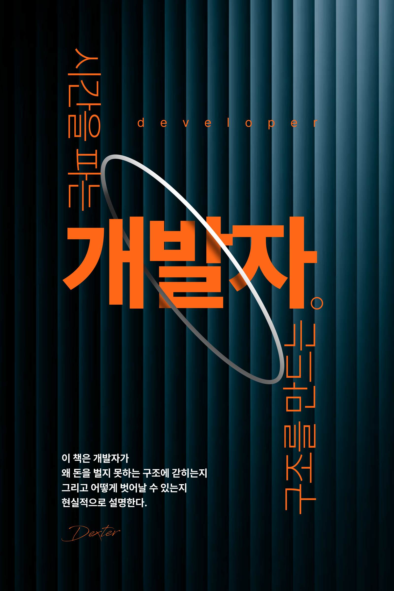

시간을 파는 개발자, 구조를 만드는 개발자
목차
- 챕터 1. 우리는 생각한다
- 챕터 2. 왜 우리는 구조를 배우지 못했는가
- 챕터 3. 돈은 어떻게 만들어지는가
- 챕터 4. 개발자는 어떻게 구조를 만들 수 있는가
- 챕터 5. 우리는 왜 실행하지 못하는가
- 챕터 6. 구조를 바꾸는 현실적인 방법
- 챕터 7. 개발자가 만들 수 있는 돈의 구조
- 챕터 8. 결국 우리는 어떤 삶을 원하는가
프롤로그
삶을 설계하는 개발자
어떠한 이유에서인지
종교나 가족에 대한 이야기는 의도적으로 제외했다.
그 편이 더 공평하고,
조금 더 인간적인 이야기로 다가갈 수 있다고 생각했기 때문이다.
개발자의 관점에서 쓴 글이니,
이 선택 역시 이해될 것이라 믿는다.
나는 INTJ이다.
Developer - dexter.
챕터1.
우리는 생각한다.
우리는 끊임없이 생각한다.
내가 하는 일이
내 삶에 얼마나 의미 있게 반영되는지,
혹은 얼마나 허무하게 흘러가고 있는지에 대해.
물론 알고 있다.
삶의 희로애락이 오직 ‘일’로만 결정되지 않는다는 것을.
그럼에도 불구하고,
자신이 들인 시간과 노력이
얼마나 삶을 윤택하게 만드는지에 대한 질문은
인류가 오랫동안 붙잡고 있는 고민이다.
그래서 질문은 결국 하나로 좁혀진다.
우리는 왜 이렇게까지 일을 하면서도
그 결과가 삶의 여유로 이어지지 않는 걸까.
특히 개발자에게 이 괴리는 더 뚜렷하다.
끊임없이 기술을 배우고,
문제를 해결하며,
누군가의 비즈니스를 성장시키고 있음에도 불구하고
정작 자신의 삶은 크게 달라지지 않는다.
많이 만들었지만, 많이 남지 않는다.
열심히 일했지만, 자유로워지지 않는다.
이 이상한 구조는 어디에서 시작된 걸까.
- 프리랜서와 회사에서의 생활
어느 순간부터 이런 생각이 들기 시작했다.
회사를 다니며 10년 넘게 개발을 해오면서
내 실력은 분명히 좋아졌다.
더 빠르게 만들 수 있게 되었고,
더 복잡한 문제도 해결할 수 있게 되었다.
하지만 이상하게도
삶이 그만큼 나아졌다는 느낌은 들지 않았다.
업무 능력이 올라갈수록
책임과 피로도는 함께 증가했고,
지출 역시 자연스럽게 늘어났다.
이사로 출퇴근 거리는 더 멀어졌고,
물가 상승까지 겹치면서
열심히 일해도 여유는 쉽게 만들어지지 않았다.
이런 흐름 속에서
나는 자연스럽게 다른 선택지를 바라보게 되었다.
프리랜서.
그 매력은 단순했다.
회사에 가지 않아도 된다는 것,
그리고 눈치를 보지 않아도 된다는 것.
정해진 시간에 출근하지 않아도 되고,
같은 자리에 묶여 있을 필요도 없다.
눈이 떠지는 시간에 일어나
원하는 카페에서 일을 시작하는 것만으로도
전혀 다른 만족감이 느껴졌다.
집에 돌아오는 시간은 비슷했지만,
하루를 보내는 방식이 바뀌자
삶의 만족도는 분명히 높아졌다.
사람은 지칠 때쯤
새로운 활력이 필요하다는 것을 알게 된다.
같은 일을 하더라도
구조가 바뀌면 전혀 다른 감각으로 받아들여진다.
그 변화만으로도 다시 버틸 수 있다.
그렇게 1년, 2년이 흘렀다.
다시 안정감을 느끼기 시작했다.
하지만 그 안정감은 오래가지 않았다.
또 다른 질문이 떠올랐다.
나는 결국,
시간을 써야만 돈을 벌 수 있는 구조 안에 있는 것은 아닐까.
일은 결국
시간과 에너지를 넣으면 돈이 나오는 구조다.
시간이 흐르면 돈은 소비되고,
몸과 정신은 점점 소모된다.
하지만 돈을 벌기 위해서는
멈출 수 없다.
멈추는 순간,
모든 것이 멈춘다.
많은 개발자들이 믿는다.
실력이 올라가면
수입도 자연스럽게 올라갈 것이라고.
틀린 말은 아니다.
초기에는 분명히 그렇다.
하지만 어느 순간부터
이 공식은 더 이상 작동하지 않는다.
아무리 실력이 올라가도
하루의 시간은 늘어나지 않는다.
결국 우리는 같은 구조 안에서
단가만 올리고 있을 뿐이다.
시간을 더 쓰고,
몸을 더 혹사시키고,
더 많은 책임을 떠안으면서.
그렇게 만들어진 수입은
언제든 멈출 수 있는 수입이다.
여기서 차이가 생긴다.
누군가는 여전히
자신의 시간을 팔고 있고,
누군가는
시간을 팔지 않아도 돌아가는 구조를 만든다.
이 차이는 직업의 차이가 아니다.
구조의 차이다.
개발자는 문제를 해결하는 사람이다.
하지만 이상하게도
자신의 수익 구조에 대해서는
문제로 인식하지 않는다.
더 좋은 코드를 짜는 데에는 집착하면서도
더 나은 구조를 만드는 데에는 무심하다.
생각해보면 이상하다.
자동화를 만들고,
시스템을 만들고,
반복을 줄이는 일을 하는 사람들이
정작 자신의 삶에서는
가장 비효율적인 구조에 머물러 있다.
우리는 이미 알고 있다.
이 구조를 벗어나지 않는 한
아무리 오래, 열심히 일해도
결과는 크게 달라지지 않는다.
그래서 질문은 다시 돌아온다.
왜 우리는 이 구조를 벗어나지 못하는가.
우리는 기술을 배우는 데에는 익숙하지만,
구조를 설계하는 법은 배우지 못했다.
챕터2.
왜 우리는 구조를 배우지 못했는가
우리는 분명히 배워왔다.
문제를 해결하는 법을,
더 효율적인 코드를 짜는 법을,
더 빠르게 결과를 만들어내는 방법을.
하지만 단 한 가지는 배우지 못했다.
구조를 설계하는 법.
우리가 처음 개발을 배울 때,
가장 먼저 접하는 것은 문법이다.
변수, 조건문, 반복문.
그리고 함수와 클래스.
조금 더 나아가면
프레임워크를 배우고,
아키텍처를 배우고,
협업 방식을 배운다.
하지만 이 모든 것은
결국 하나를 위한 것이다.
“주어진 문제를 해결하는 것.”
문제는 여기서 시작된다.
우리는 항상
“문제가 주어지는 입장”에 익숙해져 있다.
누군가가 요구사항을 정리해주고,
누군가가 방향을 결정해주고,
우리는 그 안에서 최적의 해답을 만들어낸다.
이 과정은 효율적이다.
그리고 안정적이다.
하지만 동시에
아주 위험한 구조이기도 하다.
왜냐하면 이 구조 안에서는
우리가 스스로 질문을 만들 필요가 없기 때문이다.
무엇을 만들어야 하는지,
왜 만들어야 하는지,
이걸 만들어서 무엇을 얻어야 하는지.
이 질문들은 대부분
우리의 역할 밖에 있다.
우리는 그저
주어진 문제를 잘 해결하는 사람으로 남는다.
그래서 시간이 지나도
우리는 여전히 같은 방식으로 일한다.
더 빠르게,
더 정확하게,
더 많이.
하지만 방향은 여전히
누군가에 의해 결정된다.
이 차이는 작아 보이지만
결과에서는 극단적으로 갈린다.
누군가는 문제를 해결하면서 돈을 벌고,
누군가는 문제 자체를 만들어내면서 돈을 번다.
이 둘은 전혀 다른 게임이다.
문제를 해결하는 사람은
항상 시간과 맞바꾼다.
하지만 문제를 만드는 사람은
구조를 만든다.
구조는 반복된다.
그리고 반복은 돈을 만든다.
여기서 우리는 한 가지 착각을 하게 된다.
“더 잘 만들면, 더 많이 벌 수 있다.”
부분적으로는 맞다.
하지만 구조를 바꾸지 않는 한
그 증가에는 한계가 있다.
아무리 뛰어난 개발자라도
하루 24시간이라는 제한에서 벗어날 수는 없다.
그래서 우리는
결국 같은 벽에 부딪힌다.
더 이상 시간을 늘릴 수 없는 순간.
그때서야
우리는 처음으로 생각하게 된다.
“다른 방법은 없는 걸까.”
하지만 이미 우리는
오랫동안 하나의 방식에 익숙해져 있다.
누군가의 문제를 해결하고,
그 대가로 돈을 받는 방식.
이 구조는 너무 자연스럽기 때문에
의심조차 하지 않는다.
그리고 이것이
우리가 구조를 배우지 못한 이유다.
배운 적이 없어서가 아니라,
필요했던 적이 없었기 때문이다.
챕터3.
돈은 어떻게 만들어지는가
우리는 돈을 번다고 생각한다.
하지만 정확히 말하면,
우리는 돈을 “만든다”기보다
특정한 방식으로 “교환”하고 있을 뿐이다.
대부분의 사람들은
자신의 시간과 노동을
돈과 교환한다.
이 구조는 단순하다.
시간을 쓰면 돈이 생기고,
시간을 멈추면 돈도 멈춘다.
이것이 우리가 가장 익숙한 방식이다.
그리고 개발자 역시
이 구조 안에 있다.
조금 더 많이 벌기 위해서는
더 오래 일하거나,
더 높은 단가를 받아야 한다.
하지만 이 방식에는
명확한 한계가 있다.
시간은 늘릴 수 없다.
그래서 우리는
다른 방식의 존재를 알아야 한다.
돈이 만들어지는 방식은
크게 세 가지로 나눌 수 있다.
첫 번째는
노동 기반 수익이다.
가장 직관적이고,
가장 흔한 방식이다.
일을 하면 돈을 받는다.
하지만 이 구조는
반드시 한계를 가진다.
시간에 묶여 있기 때문이다.
두 번째는
자산 기반 수익이다.
자산이 돈을 만들어낸다.
부동산, 주식,
혹은 콘텐츠와 같은 것들이 여기에 포함된다.
이 구조에서는
내가 직접 움직이지 않아도
수익이 발생할 수 있다.
하지만 자산을 만들기 위해서는
초기 자본이나 시간이 필요하다.
그리고 대부분의 사람들은
이 단계까지 오지 못한다.
그래서 더 중요한 것은
세 번째다.
세 번째는
시스템 기반 수익이다.
이건 조금 다르다.
처음에는
시간과 노력이 들어간다.
하지만 한 번 구조가 만들어지면
그 이후부터는 반복된다.
예를 들어,
한 번 만든 서비스,
한 번 만들어놓은 코드,
한 번 구축된 흐름.
이것들은
내가 계속 일하지 않아도
가치를 만들어낸다.
여기서 중요한 것은
“반복 가능성”이다.
노동은 반복될수록
피로가 쌓인다.
하지만 시스템은 반복될수록
효율이 쌓인다.
이 차이는
시간이 지날수록 더 크게 벌어진다.
개발자는
이 구조를 만들 수 있는 몇 안 되는 직업이다.
그럼에도 불구하고
대부분의 개발자는
여전히 첫 번째 방식에 머물러 있다.
왜일까.
우리는 이미 알고 있다.
문제를 해결하는 법은 배웠지만,
구조를 만드는 법은 배우지 못했기 때문이다.
그래서 다시 질문해야 한다.
나는 지금
어떤 방식으로 돈을 만들고 있는가.
그리고 더 중요한 질문.
이 구조는
나를 어디로 데려갈 것인가.
챕터4.
개발자는 어떻게 구조를 만들 수 있는가
구조를 만든다는 것은
거창한 일이 아니다.
처음부터 대단한 서비스를 만들 필요도 없고,
큰 자본이 필요한 것도 아니다.
구조는 생각보다 단순한 곳에서 시작된다.
우리가 반복하고 있는 일,
여러 번 비슷하게 만들어본 기능,
매번 비슷하게 해결했던 문제들.
이미 우리는
수많은 “반복”을 경험하고 있다.
문제는 이것을
그때그때 해결하고 끝낸다는 점이다.
구조를 만든다는 것은
이 반복을 “자산으로 바꾸는 것”이다.
다시 말해,
한 번 만든 것을
여러 번 사용할 수 있게 만드는 것.
이 차이가
노동과 구조를 가르는 기준이다.
- 반복되는 일을 코드로 고정시키기
개발자는 이미
자동화를 만들 수 있는 능력을 가지고 있다.
그럼에도 불구하고
많은 작업을 여전히 수동으로 반복한다.
예를 들어,
매번 새로 만드는 관리자 페이지
반복되는 API 구조
비슷한 형태의 쇼핑몰, 랜딩 페이지
고객마다 반복되는 커스터마이징 작업
이것들을 단순히 “일”로 처리하면
그 순간의 돈으로 끝난다.
하지만 이것을
템플릿, 라이브러리, 서비스 형태로 만들면
이건 더 이상 일이 아니다.
구조가 된다.
- 결과물이 아니라 흐름을 만든다
대부분의 개발자는
“결과물”을 만든다.
하지만 구조를 만드는 사람은
“흐름”을 만든다.
예를 들어,
웹사이트 하나를 만들어주는 것과
웹사이트를 쉽게 만들 수 있는 시스템을 만드는 것은
완전히 다른 이야기다.
전자는 한 번으로 끝나지만,
후자는 계속해서 반복된다.
여기서 중요한 것은
기술의 난이도가 아니다.
관점이다.
“이걸 한 번 더 만들지 않으려면 어떻게 해야 할까”
이 질문 하나가
구조를 만든다.
- 작게 만들어도 괜찮다
많은 사람들이
구조를 만든다고 하면
큰 서비스를 떠올린다.
하지만 대부분의 구조는
아주 작은 형태로 시작된다.
특정 기능만 제공하는 API
반복 작업을 줄여주는 간단한 툴
특정 문제만 해결하는 마이크로 서비스
이런 것들도 충분히
돈을 만드는 구조가 될 수 있다.
중요한 것은 규모가 아니라
반복 가능성이다.
- 처음에는 돈이 안 될 수도 있다
여기서 많은 사람들이 포기한다.
구조를 만들기 시작하면
초기에는 오히려 돈이 덜 벌릴 수 있다.
왜냐하면
지금까지 하던 “즉시 돈이 되는 일”을 줄이고,
미래를 위한 작업을 해야 하기 때문이다.
이 구간은 불편하다.
그리고 불안하다.
그래서 대부분은
다시 원래 방식으로 돌아간다.
하지만 이 구간을 넘어서야
비로소 차이가 생긴다.
시간을 쓰지 않아도
결과가 만들어지는 경험.
이 경험이 쌓이기 시작하면
더 이상 이전으로 돌아가기 어렵다.
- 완벽하지 않아도 된다
많은 개발자들이
구조를 만들지 못하는 이유 중 하나는
완벽주의다.
더 좋은 구조를 고민하다가,
더 나은 기술을 찾다가,
결국 아무것도 만들지 않는다.
하지만 구조는
완벽하게 만드는 것이 아니라
“작동하게 만드는 것”이 먼저다.
작게 만들고,
돌려보고,
필요하면 개선하면 된다.
중요한 것은
“시작”이다.
챕터5.
우리는 왜 실행하지 못하는가
우리는 이미 알고 있다.
반복되는 일을 줄여야 한다는 것도,
구조를 만들어야 한다는 것도,
시간을 팔지 않는 방향으로 가야 한다는 것도.
그럼에도 불구하고
대부분은 그대로 머문다.
이건 의지의 문제가 아니다.
능력의 문제도 아니다.
구조의 문제가 아니라,
“상태”의 문제다.
- 시간이 없어서가 아니라, 여유가 없다
많은 사람들이 말한다.
“시간이 없어서 못 한다.”
하지만 정확히 말하면
시간이 없는 것이 아니라
여유가 없는 상태다.
하루 일을 마치고 나면
에너지가 남아 있지 않다.
이미 일을 하면서
모든 집중력과 체력을 써버렸기 때문이다.
이 상태에서는
새로운 구조를 만드는 일이 아니라,
그저 쉬는 것이 우선이 된다.
그래서 우리는
다시 같은 하루를 반복한다.
- 지금의 수익을 포기할 수 없다
구조를 만든다는 것은
당장의 수익을 일부 포기하는 일이다.
지금까지는
시간을 쓰면 바로 돈이 들어왔다.
하지만 구조를 만드는 일은
바로 돈이 되지 않을 수 있다.
이 차이는 생각보다 크다.
눈에 보이는 수익을 포기하고,
보이지 않는 가능성에 투자하는 일.
이건 단순한 선택이 아니라
심리적인 장벽이다.
그래서 우리는
안전한 선택을 반복한다.
- 실패 비용이 너무 크게 느껴진다
만약 구조를 만들다가 실패하면
그 시간은 아무 의미가 없어진 것처럼 느껴진다.
하지만 일을 하다가 쓴 시간은
항상 돈으로 환산된다.
이 차이 때문에
우리는 더더욱 구조를 피하게 된다.
하지만 사실은 반대다.
일을 하며 쓴 시간은
그 순간에 끝나지만,
구조를 만들다가 쓴 시간은
나중에 계속해서 영향을 미친다.
문제는
이걸 체감해본 적이 없다는 것이다.
- 방향이 없으면 시작할 수 없다
많은 개발자들이
“무엇을 만들어야 할지 모르겠다”고 말한다.
이건 자연스러운 상태다.
우리는 지금까지
“주어진 문제”를 해결하는 데 익숙했기 때문이다.
하지만 구조를 만든다는 것은
문제를 스스로 정의하는 일이다.
이건 전혀 다른 영역이다.
그래서 대부분은
생각만 하다가 멈춘다.
완벽한 아이디어를 찾으려고 하다가
아무것도 시작하지 못한다.
- 아직 절박하지 않다
이건 조금 불편한 이야기일 수 있다.
사실 많은 경우
우리는 아직 충분히 괜찮다.
지금의 수입으로도
어느 정도는 살아갈 수 있고,
크게 불편하지 않다.
그래서 굳이 바꿀 이유가 없다.
하지만 이 상태는
천천히 우리를 묶어둔다.
시간이 지날수록
변화의 비용은 더 커지고,
움직이기는 더 어려워진다.
우리는 실행하지 못하는 것이 아니라,
지금의 구조에서 벗어나지 못하는 것이다.
이건 의지가 약해서가 아니라
환경이 그렇게 만들어져 있기 때문이다.
그래서 해결 방법도 단순하다.
의지를 강화하는 것이 아니라,
구조를 바꿔야 한다.
챕터6.
구조를 바꾸는 가장 현실적인 방법
우리는 이미 알고 있다.
문제도 알고 있고, 방향도 알고 있다.
이제 남은 것은 단 하나다.
실제로 바꾸는 것.
하지만 여기서 대부분 멈춘다.
이유는 간단하다.
방법이 추상적이기 때문이다.
그래서 필요한 것은
거창한 전략이 아니라,
지금 당장 실행 가능한 방식이다.
- 시간을 만들려고 하지 말고, 구조를 바꿔라
많은 사람들이
“시간을 따로 내서 해야지”라고 생각한다.
하지만 현실은 그렇지 않다.
일을 하고 남는 시간으로
새로운 구조를 만든다는 것은
생각보다 오래 지속되기 어렵다.
그래서 접근을 바꿔야 한다.
기존 일을 줄이면서 시작해야 한다.
100% 일을 하던 상태에서 → 90%로 줄이고
남은 10%를 구조 만드는 데 쓴다
이 10%가
미래를 바꾸는 시간이다.
- “돈 되는 일”과 “구조 만드는 일”을 분리하지 마라
많은 사람들이
이 둘을 완전히 다른 것으로 생각한다.
하지만 가장 현실적인 방법은
지금 하고 있는 일 안에서
구조를 만드는 것이다.
예를 들어,
반복되는 기능 → 모듈화
자주 쓰는 코드 → 패키지화
여러 번 만드는 서비스 → 템플릿화
이렇게 하면
“돈 되는 일”이
곧 “구조 만드는 일”이 된다.
이게 핵심이다.
- 작게 팔아보고, 나중에 키워라
처음부터 완벽한 서비스를 만들 필요는 없다.
오히려 반대다.
작게 만들어서
바로 팔아봐야 한다.
왜냐하면
돈이 되는 구조는
아이디어가 아니라
“검증”에서 나오기 때문이다.
작은 기능 하나
단순한 자동화 하나
특정 문제 하나 해결
이 정도로 충분하다.
중요한 건
**“누군가 돈을 내는가”**다.
- 실패 비용을 줄여라
구조를 만들다 포기하는 이유는
실패가 크게 느껴지기 때문이다.
그래서 전략이 필요하다.
개발 기간을 짧게 가져간다
기능을 최소화한다
빠르게 결과를 확인한다
이렇게 하면
실패해도 타격이 작다.
그리고 이 경험이 쌓이면
점점 더 빠르게 시도할 수 있게 된다.
- “완성”이 아니라 “흐름”을 만든다
많은 사람들이
하나를 완벽하게 만들려고 한다.
하지만 중요한 건
하나의 결과물이 아니라
지속적으로 만들어내는 흐름이다.
한 번 만들고 끝나는 것이 아니라,
만들고
팔아보고
개선하고
다시 만든다
이 사이클이 돌아가기 시작하면
이미 구조는 만들어진 것이다.
핵심 전략 요약
- 시간을 따로 만들지 말고, 기존 일을 줄인다
- 지금 하는 일 안에서 구조를 만든다
- 작게 만들어서 바로 팔아본다
- 실패 비용을 낮춘다
- 반복 가능한 흐름을 만든다
이건 특별한 사람이 하는 방식이 아니다.
현실에서 가장 실행 가능한 방식이다.
중요한 변화
이 과정을 거치면서
하나의 변화가 생긴다.
더 이상
“시간을 팔아서 돈을 버는 사람”이 아니라,
“구조를 만들어 돈을 만드는 사람”으로
조금씩 바뀌기 시작한다.
이 변화는 작지만,
시간이 지날수록 결정적인 차이를 만든다.
챕터7.
개발자가 만들 수 있는 돈의 구조들
이제 질문은 명확해졌다.
구조를 만들어야 한다는 것도 알고 있고,
어떻게 시작해야 하는지도 이해했다.
그렇다면 남은 것은 하나다.
무엇을 만들 것인가.
개발자가 만들 수 있는 구조는 생각보다 다양하다.
하지만 대부분은 몇 가지 유형으로 정리된다.
- SaaS (서비스 자체가 돈이 되는 구조)
가장 강력한 구조다.
한 번 만든 서비스가
여러 사용자에게 반복적으로 판매된다.
월 구독
사용량 기반 과금
기능 제한 / 업그레이드 모델
이 구조의 핵심은 단순하다.
“한 번 만들고, 여러 번 판다.”
예를 들어,
- 예약 관리 시스템
- 간단한 CRM
- 특정 업종 전용 툴
- 반복 업무 자동화 서비스
중요한 건 거창한 기능이 아니다.
특정한 문제 하나를
확실하게 해결하는 것이다.
- 자동화 도구 (시간을 줄여주는 구조)
사람들은 시간을 아끼기 위해 돈을 쓴다.
이 구조는
그 지점을 정확히 건드린다.
데이터 수집 자동화
반복 작업 스크립트
업무 프로세스 자동화
작게 시작하기 좋고,
개발자에게 가장 현실적인 진입점이다.
처음에는 내부에서 쓰다가,
나중에 외부에 판매하는 방식도 가능하다.
- API / 플랫폼 (기능을 파는 구조)
이건 개발자에게 특히 유리한 구조다.
특정 기능을 API 형태로 제공하고,
사용량 기반으로 수익을 만든다.
인증 / 결제 모듈
데이터 처리
특정 기능 (이미지, 텍스트, 분석 등)
이 구조는
“결과”가 아니라 “기능” 자체를 판매한다.
잘 만들어지면
다른 서비스 위에서 계속 사용된다.
- 템플릿 / 재사용 가능한 자산
이미 우리가 하고 있는 일과 가장 가깝다.
- 웹사이트 템플릿
- 관리자 페이지 구조
- UI 컴포넌트
- 코드 스니펫
한 번 만들어두면
여러 번 판매할 수 있다.
작게 시작할 수 있고,
실패 부담이 낮다.
하지만 중요한 건
“단순한 코드”가 아니라
“바로 쓸 수 있는 형태”로 만드는 것이다.
- 콘텐츠 + 개발 (지식의 구조화)
개발 경험 자체도 자산이 된다.
- 강의
- 전자책
- 튜토리얼
- 기술 블로그
이건 단순한 정보 전달이 아니다.
“문제를 해결하는 흐름”을
다른 사람에게 전달하는 구조다.
그리고 이 구조는
시간이 지날수록 계속 누적된다.
중요한 기준
어떤 구조를 선택하든
반드시 확인해야 할 기준이 있다.
반복 가능한가
내가 없어도 돌아가는가
여러 번 판매 가능한가
이 세 가지가 없다면
그건 구조가 아니라 또 다른 노동이다.
현실적인 시작점
많은 사람들이
“무엇을 만들어야 할지 모르겠다”고 말한다.
그럴 때는 이렇게 보면 된다.
지금 하고 있는 일에서
가장 많이 반복되는 것.
그게 바로
첫 번째 구조의 시작점이다.
완전히 새로운 것을 찾으려고 하지 말고,
이미 하고 있는 것을 바꿔라.
챕터8.
결국 우리는 어떤 삶을 원하는가
우리는 처음에
하나의 질문에서 시작했다.
내가 하는 일이
내 삶을 얼마나 윤택하게 만드는가.
여기까지 오면서
우리는 많은 것을 이해했다.
왜 열심히 일해도
삶이 크게 달라지지 않는지,
왜 개발자라는 직업이
시간과 강하게 연결되어 있는지,
그리고
그 구조를 어떻게 바꿀 수 있는지.
하지만 여전히
남아 있는 질문이 있다.
그래서 우리는
왜 돈을 벌려고 하는가.
이 질문은 단순해 보이지만
생각보다 쉽게 답할 수 없다.
더 좋은 집,
더 편한 생활,
더 많은 선택지.
이 모든 것들은 결국
하나로 연결된다.
자유.
원하는 시간에,
원하는 일을,
원하는 방식으로 할 수 있는 상태.
우리가 돈을 원하는 이유는
결국 이 자유에 가깝다.
하지만 여기서
한 가지 착각이 생긴다.
돈이 많아지면
자동으로 자유로워질 것이라는 생각.
현실은 그렇지 않다.
구조가 바뀌지 않으면
돈이 늘어나도
여전히 같은 방식으로 살아가게 된다.
더 많은 일을 하고,
더 많은 책임을 지고,
더 많은 시간을 쓰면서.
그래서 중요한 것은
단순히 돈을 버는 것이 아니라,
어떤 구조 위에서
돈을 만들고 있는가이다.
이 차이는
삶의 방향을 완전히 바꾼다.
우리는 선택해야 한다.
지금처럼
시간을 팔아서 안정적인 삶을 유지할 것인지,
아니면
불확실하더라도 구조를 만들어
다른 가능성을 열 것인지.
이 선택에는 정답이 없다.
누군가는 안정이 더 중요하고,
누군가는 자유가 더 중요하다.
중요한 것은
의도하지 않은 선택을 하지 않는 것이다.
흐름에 떠밀려서가 아니라,
스스로 이해하고 선택하는 것.
그게 이 책이 말하고 싶은 전부다.
우리는 코드를 짜는 사람이 아니라,
삶의 구조를 설계하는 사람이다.
우리의 인생을 들여다보면
오류가 없는 삶은 없다.
그럼에도 우리는 멈추지 않는다.
불안함과 흔들림 속에서도
자신의 삶을 설계해 나간다는 것,
그것만으로 충분히 인생의 오류를 해결한
개발자가 아닐까 하는 생각이 든다.